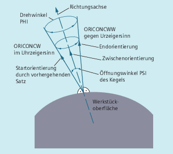

Mit der erweiterten Orientierung ist es möglich, Orientierungsänderungen entlang sich einer im Raum befindlichen Kegelmantelfläche auszuführen. Die Interpolation des Orientierungsvektors auf einer Kegelmantelfläche erfolgt mit den modalen Befehlen ORICONxx. Für die Interpolation in einer Ebene kann die Endorientierung mit ORIPLANE programmiert werden. Generell wird die Startorientierung durch die vorhergehenden Sätze festgelegt.
Die Endorientierung wird entweder durch Angabe der Winkelprogrammierung in Euler- oder RPY-Winkel mit A2, B2, C2 oder durch Programmierung der Rundachspositionen mit A, B, C festgelegt. Für die Orientierungsachsen entlang der Kegelmantelfläche sind weitere Programmierangaben erforderlich:
Drehachse des Kegels als Vektor mit A6, B6, C6
Öffnungswinkel PSI mit den Bezeichner NUT
Zwischenorientierung im Kegelmantel mit A7, B7, C7
| Hinweis |
Programmierung des Richtungsvektor A6, B6, C6 für die Drehachse des Kegels Die Programmierung einer Endorientierung ist nicht unbedingt erforderlich. Ist keine Endorientierung angegeben, dann wird ein voller Kegelmantel mit 360 Grad interpoliert. Programmierung des Öffnungswinkel des Kegels mit NUT=winkel Die Angabe einer Endorientierung ist zwingend erforderlich. Ein vollständiger Kegelmantel mit 360 Grad kann auf diese Weise nicht interpoliert werden. Programmierung der Zwischenorientierung A7, B7, C7 im Kegelmantel Die Angabe einer Endorientierung ist zwingend erforderlich. Die Orientierungsänderung und Drehrichtung wird eindeutig durch die drei Vektoren Start-, End- und Zwischenorientierung festgelegt. Alle drei Vektoren müssen hierbei voneinander unterschiedlich sein. Ist die programmierte Zwischenorientierung parallel zur Start- oder Endorientierung, dann wird eine lineare Großkreisinterpolation der Orientierung in der Ebene, die von Start- und Endvektor aufgespannt wird, durchgeführt. |
Erweiterte Orientierungsinterpolation auf einer Kegelmantelfläche | |
oder
| Interpolation auf einen Kegelmantel mit Richtungsvektor im/gegen Uhrzeigersinn des Kegels und Endorientierung oder tangentialem Übergang und oder Polynome für Drehwinkel und |
| Interpolation in der Ebene (Großkreisinterpolation) |
| Interpolation auf einer Kegelmantelfläche im Uhrzeigersinn |
| Interpolation auf einer Kegelmantelfläche gegen Uhrzeigersinn |
| Interpolation auf einer Kegelmantelfläche tangentialer Übergang |
| Programmierung der Drehachse des Kegels (normierter Vektor) |
| Öffnungswinkel des Kegels in Grad |
| Verfahrwinkel kleiner oder gleich 180 Grad |
| Verfahrwinkel größer oder gleich 180 Grad |
| Interpolation auf einer Kegelmantelfläche |
| Zwischenorientierung (Programmierung als normierter Vektor) |
| Drehwinkel der Orientierung um die Richtungsachse des Kegels |
| Öffnungswinkel des Kegels |
mögliche Polynome | Außer den jeweiligen Winkeln sind auch Polynome maximal |
| Programmcode | Kommentar |
|---|---|
| … | |
| N10 G1 X0 Y0 F5000 | |
| N20 TRAORI(1) | ; Orientierungstransformation ein. |
| N30 ORIVECT | ; Werkzeug-Orientierung als Vektor interpolieren. |
| … | ; Werkzeugorientierung in der Ebene. |
| N40 ORIPLANE | ; Großkreisinterpolation auswählen. |
| N50 A3=0 B3=0 C3=1 | |
| N60 A3=0 B3=1 C3=1 | ; Orientierung in der Y/Z-Ebene um 45 Grad gedreht, am Satzende wird die Orientierung (0,1/√2,1/√2)erreicht. |
| … | |
| N70 ORICONCW | ; Orientierungsprogrammierung auf Kegelmantel: |
| N80 A6=0 B6=0 C6=1 A3=0 B3=0 C3=1 | ; Der Orientierungsvektor wird auf einem Kegelmantel mit der Richtung (0,0,1) bis zur Orientierung (1/√2,0,1/√2) im Uhrzeigersinn interpoliert, der Drehwinkel beträgt hierbei 270 Grad. |
| N90 A6=0 B6=0 C6=1 | ; Die Werkzeugorientierung durchläuft eine volle Umdrehung auf demselben Kegelmantel. |